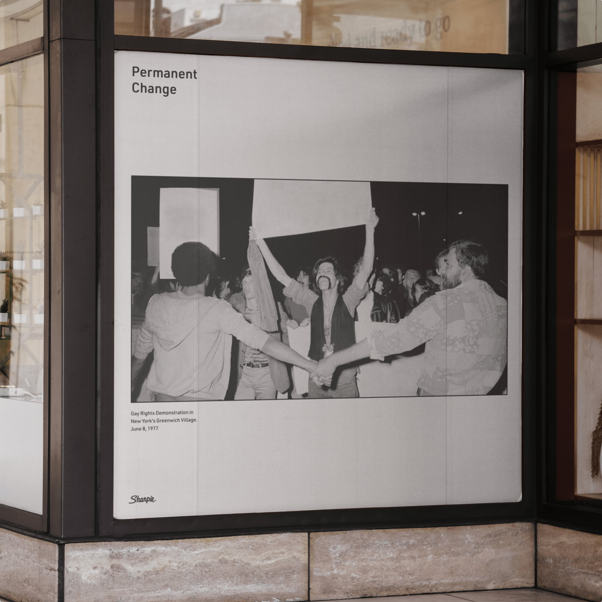
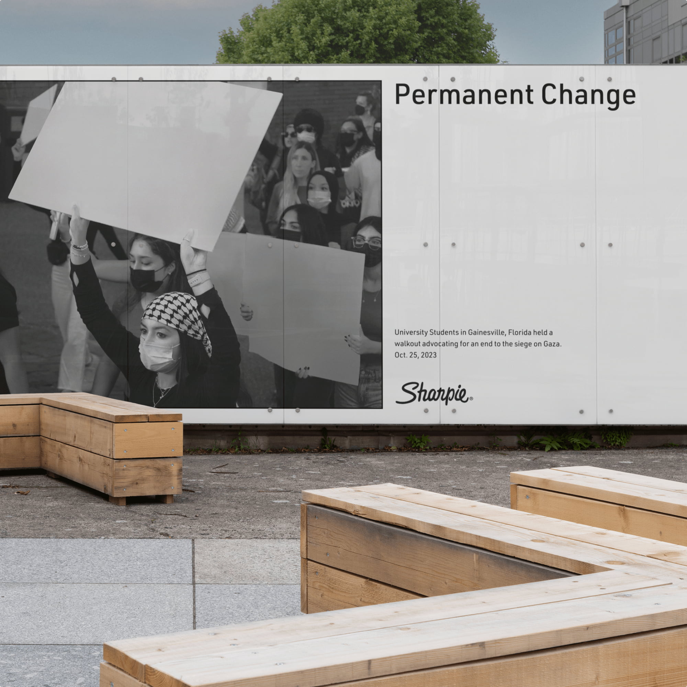
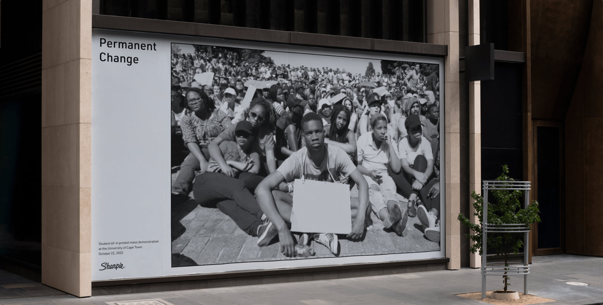
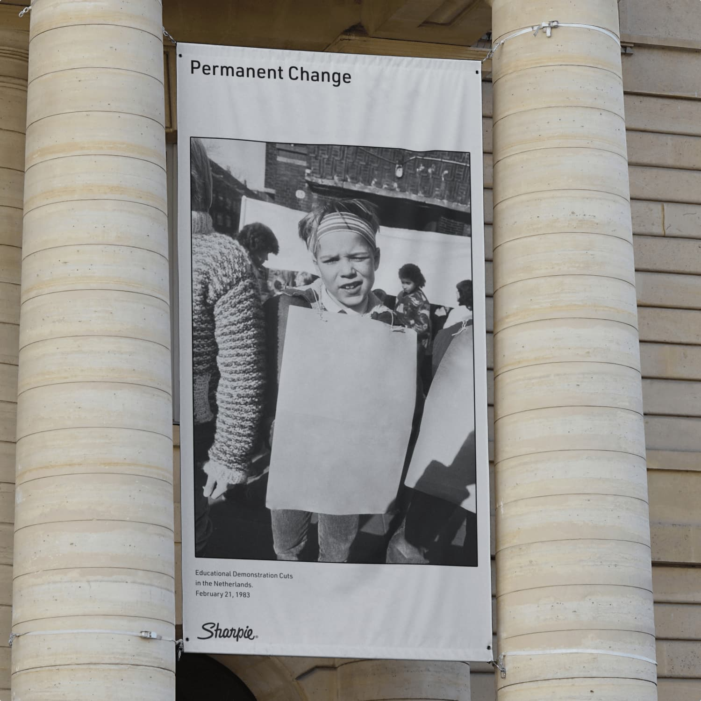
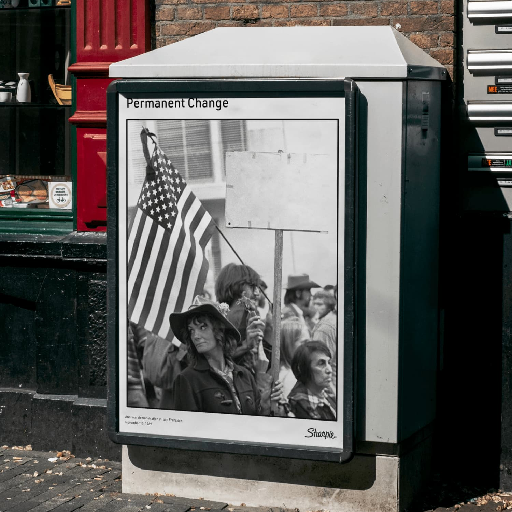

If I were leading creative for Sharpie, I would want the brand to move beyond utility and step into cultural relevance. Brands like United Colors of Benetton built entire identities around social and political provocation, using design as a platform for commentary. Sharpie has the same potential. Permanence is not only about ink but about resistance, advocacy, and voice. The challenge was to reimagine Sharpie as a brand that does not just sell a tool, but champions the lasting change that comes from it.
The result was a conceptual campaign called “Permanent Change.” It positioned Sharpie as a tool for activism and self-expression, linking permanence with impact. By focusing on absence; the empty sign, the unfinished poster, the words not yet written - the work underscored Sharpie’s historical place in protest and social movements. It reframed the brand as a symbol of resistance and transformation, and as a creative prompt for broader conversations about how design can participate in cultural change.
I created the concept direction and designed the OTH campaign assets that brought the idea life. The work repositioned permanence from a simple product feature into a cultural statement, showcasing how Sharpie could participate in conversations about activism and social change in a relevant and significant way.